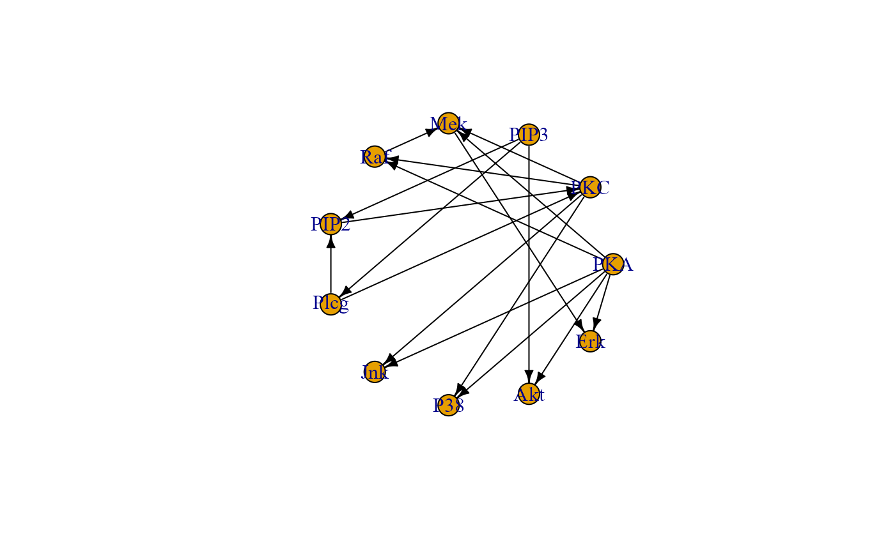
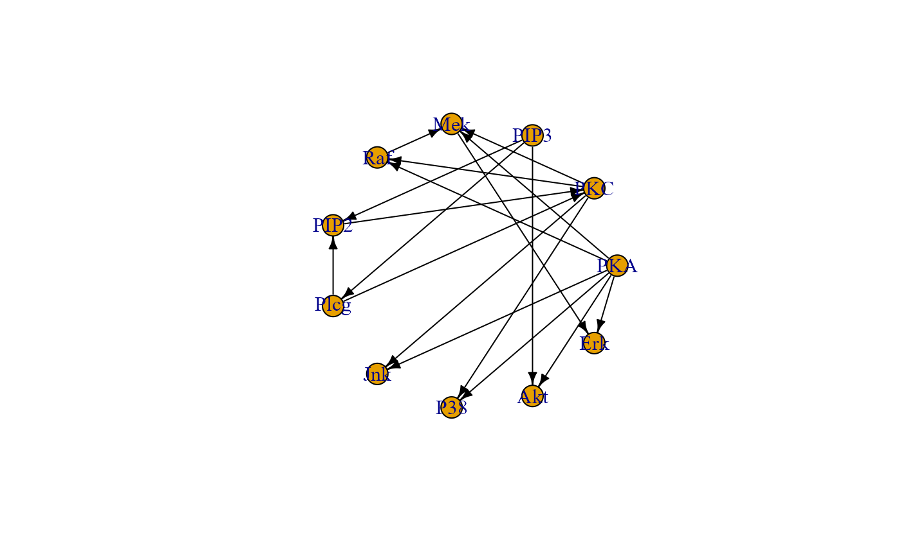

Convert a model, specified using lavaan syntax, to an igraph object.
Arguments
- model
Model specified using lavaan syntax.
- directed
Logical value. If TRUE (default), edge directions from the model will be preserved. If FALSE, the resulting graph will be undirected.
- psi
Logical value. If TRUE (default) covariances will be converted into bidirected graph edges. If FALSE, covariances will be excluded from the output graph.
- verbose
Logical value. If TRUE, a plot of the output graph will be generated. For large graphs, this could significantly increase computation time. If FALSE (default), graph plotting will be disabled.
- ...
Currently ignored.
Author
Mario Grassi mario.grassi@unipv.it
Examples
# Writing path diagram in lavaan syntax
model<-"
#path model
Jnk ~ PKA + PKC
P38 ~ PKA + PKC
Akt ~ PKA + PIP3
Erk ~ PKA + Mek
Mek ~ PKA + PKC + Raf
Raf ~ PKA + PKC
PKC ~ PIP2 + Plcg
PIP2 ~ PIP3 + Plcg
Plcg ~ PIP3
#(co)variances
PKA ~~ PIP3
"
# Graph with covariances
G0 <- lavaan2graph(model, psi = TRUE)
plot(G0, layout = layout.circle)
 # Graph without covariances
G1 <- lavaan2graph(model, psi = FALSE)
plot(G1, layout = layout.circle)

# Graph without covariances
G1 <- lavaan2graph(model, psi = FALSE)
plot(G1, layout = layout.circle)
